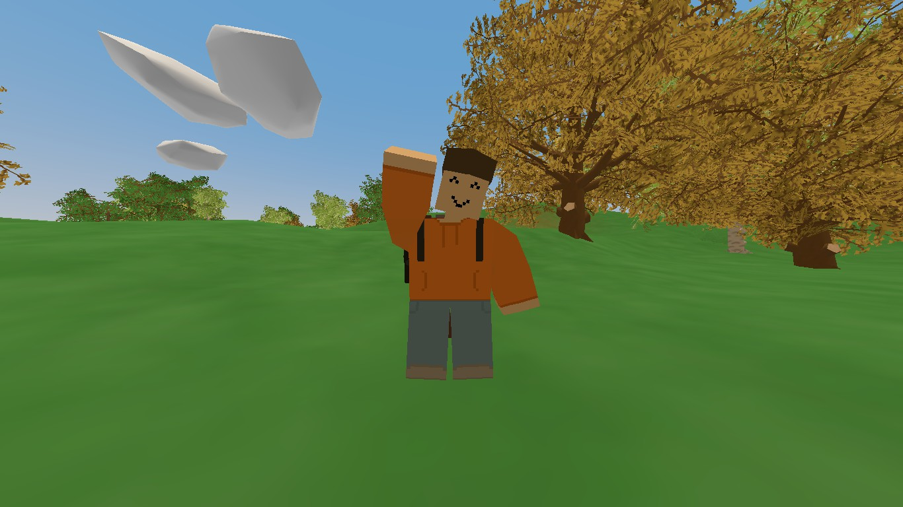
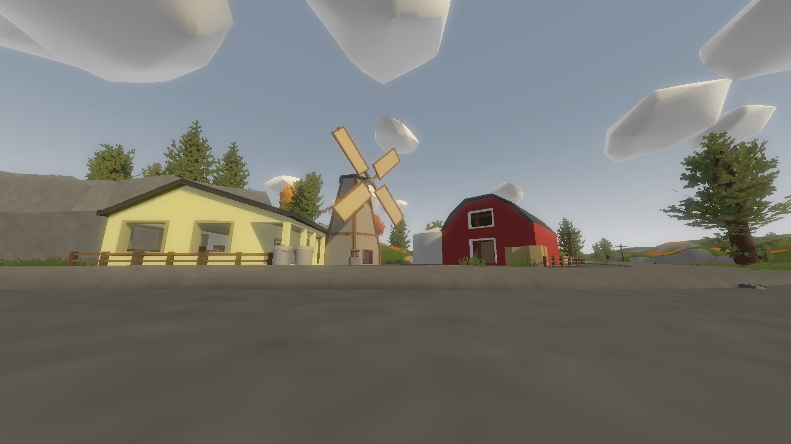
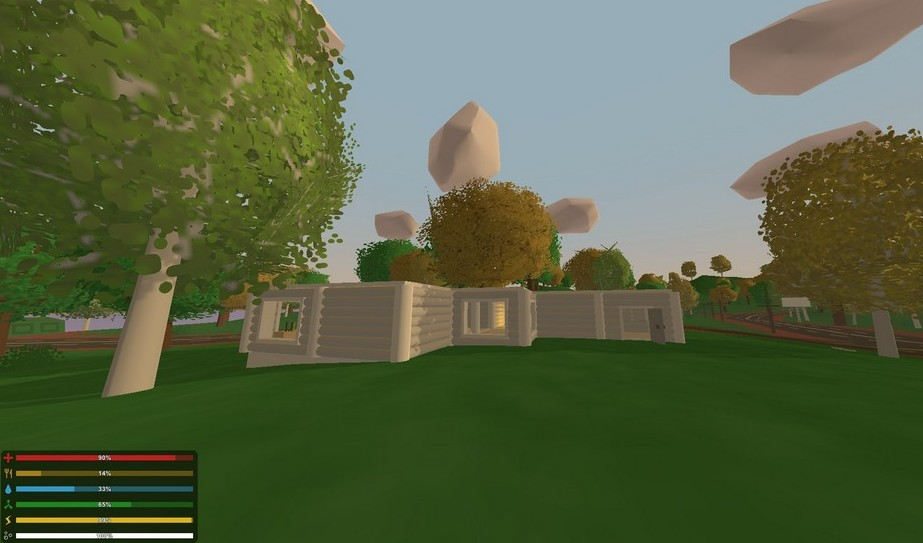

И так, начнём знакомство с игрой.
Unturned — компьютерная инди-игра
с зомби-тематикой в жанре песочницы
с элементами симулятора выживания в ужасе и открытым миром,
разработанная канадским программистом Нельсоном Секстоном,
также известным под псевдонимом Грэг Стивенс.
Игра отличается упрощённой графикой, напоминающей Roblox.©
Первым делом, осмотритесь!
Как только осмотритесь, вы можете
найти ферму или другие постройки.
Идите в них, но только аккуратно,
лучше если увидите зомби лягте.
После обыщите строение, может вы найдете
одежду, еду, или оружие.
Потом вашим делом станет поиск топора,
бензопилы или обычной ножовки.
В основном встретить их можно а лагерях, домах.
Найдите больше еды, разорвите пару футболок
и сделайте из них бинты, на пожарный.


Дальше жильё!
И так, вы нашли топор, что дальше?
вам нужно срубить деревья и подобрать немного дров.
Дальше есть 2 пути. Либо собирать собственную постройку,
либо занять готовый магазинчик,
но у каждого есть свои минусы.
В случае с магазино придётся много встречатся
с зомби и застраивать базу колючей проволокой и прочим.
А если делать свою постройку то придётся попотеть
с тем что надо будет иметь при себе много дерева.
В Общем решать лучше вам.
Как построили базу найдите много еды.
Еда самое важное, без неё ты откинешь коньки.
Также каждая игра имеет в себе маленькую частичку вирусов.
Вы можете умереть от него. Так-же сделатьте кровать или спальник, что бы в случае
смерти возродиться у себя дома. Сделайте шкафы и положите еду
(но лучше холодильник) на запас и пару медикаментов.
Также вы можете найти вакцину. Эта вещь уберёт вирус с вашего организма.